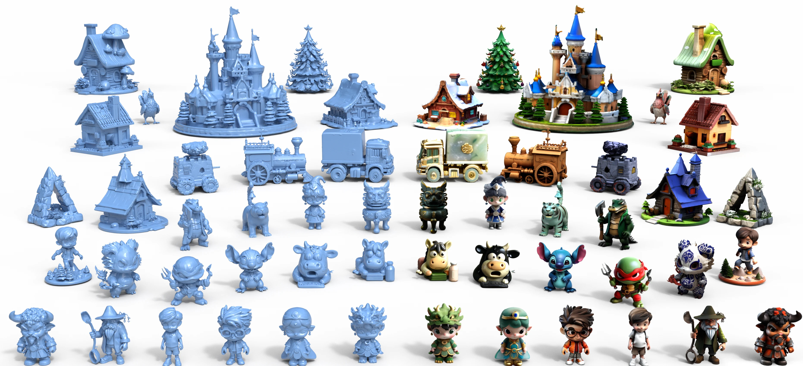

HiQu3DGen: Consistent Multi-View Guided High Quality 3D Asset Generation
ACM Multimedia 2026
* Corresponding authors
Abstract
High quality 3D asset generation remains a long-standing challenge in computer graphics, with the core difficulty lying in accurately recovering geometry and appearance that are consistent with a given input under limited single view conditions. However, existing generation paradigms struggle to impose reliable structural and appearance constraints from a single image, often resulting in inconsistencies in geometry and texture. To address these challenges, we propose HiQu3DGen, a consistency-driven framework that guides 3D asset generation through the synthesis of view-consistent multi-view representations. The proposed framework adopts a bidirectional recursive multi-view generation strategy to explicitly strengthen inter-view dependencies during generation, thereby reducing the emergence of mutually contradictory views. Leveraging these structurally consistent multi-view observations, it constructs a robust geometric intermediate and further refines geometry and texture by tightly coupling multi-view appearance cues, ultimately producing high quality textured 3D asset. Extensive quantitative and qualitative evaluations on both simple and complex 3D asset generation benchmarks demonstrate that the proposed framework consistently outperforms existing methods in terms of geometric consistency and texture fidelity.
Generated 3D Assets

BibTeX
@inproceedings{li2026hiqu3dgen,
title = {HiQu3DGen: Consistent Multi-View Guided
High Quality 3D Asset Generation},
author = {Li, Zhenyu and Gao, Shanshan and Wei, Guangshun
and Zhang, Jianing and Wang, Wenping and Zhou, Yuanfeng},
booktitle = {Proceedings of the 34th ACM International
Conference on Multimedia},
year = {2026},
doi = {10.1145/3767308.3835556}
}